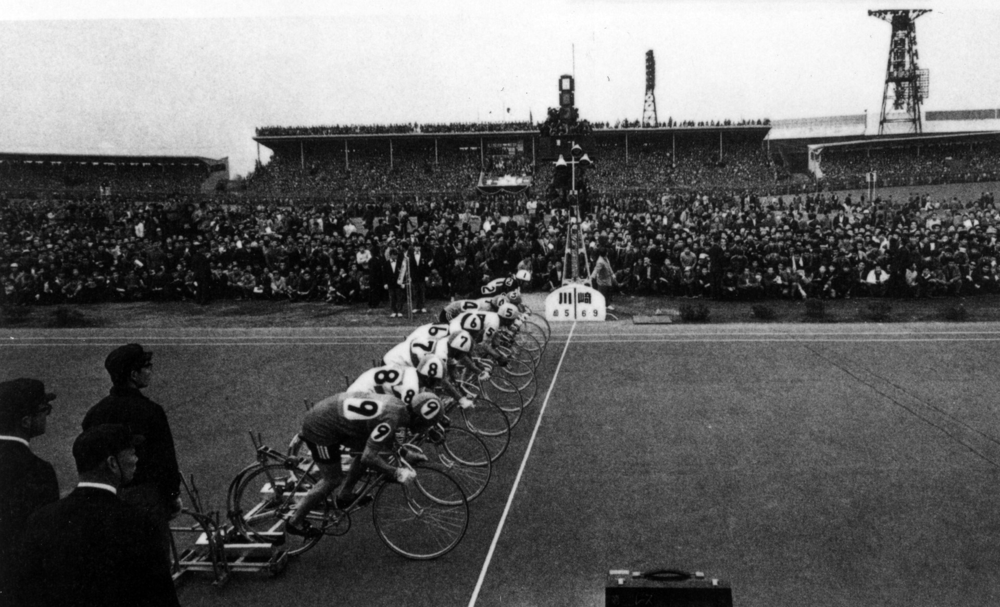

← 原稿一覧未公開の下書き · 選手・文化 · 執筆 2026-11-20
昭和の競輪写真を読む。選手の後ろにも歴史がある
昔の競輪写真は、勝者を知るためだけの資料ではありません。観客席や街並みに目を向けると、会場の変化を考える入口になります。

川崎競輪場 S40第10回オールスター決勝／川崎市／CC BY 4.0／かわさき魅力ギャラリー。資料写真。 配布元 · 利用条件まず写真の名前と出典から始める
ここで見るのは、川崎市が公開している「川崎競輪場 S40第10回オールスター決勝」です。白黒の画面には選手の列と、その後ろに大勢の観客が写っています。配布ページの日付欄は撮影日不明となっているため、名称にある年号を、そのまま別途確認済みの撮影年月日として扱わないようにしています。資料名を保ったまま読むことが出発点です。
一度目は選手、二度目は観客席を見る
最初は選手の姿を追い、次にスタンドや背景へ視線を移してみてください。走路の近くから見ている人、観客席の広がり、奥の建物。結果だけを追っている時には気付きにくい要素が、一枚の中に残っています。ただし、写真の一部分が混雑しているからといって、その日の入場者総数まで確定できるわけではありません。見えることと数えられないことを分けて楽しみます。
今と比べる時は、同じ場所かを確かめる
現在の川崎競輪場の写真と見比べる際も、撮影方向が違えば、建物がなくなったように見えることがあります。変化を記事にするには、同じ場所や同じ設備だと照合する作業が必要です。古い写真の建物名を想像で付けず、公式の沿革や図面など別の資料を探す。写真に問いを見つけ、資料で答えを確かめる順番です。
資料写真の魅力を、今日のニュースと混ぜない
この写真は歴史をたどるコラムに使う資料です。現在開催中のレースを伝える記事で、当日の写真のように置く用途には向きません。公開元はCC BY 4.0での利用を認めているため、作品名・川崎市・配布元・ライセンスへのリンクを添えて掲載します。過去の瞬間として正しく紹介することが、写真そのものの価値を伝えることにつながります。
出典・計算の位置付け
公式資料に基づく解説と編集部の読み方提案
関連記事